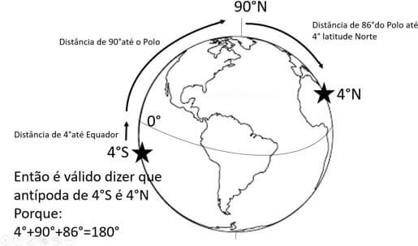
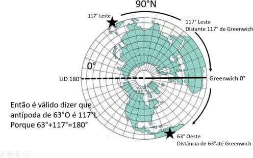
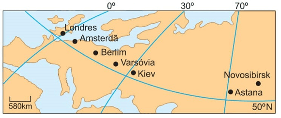
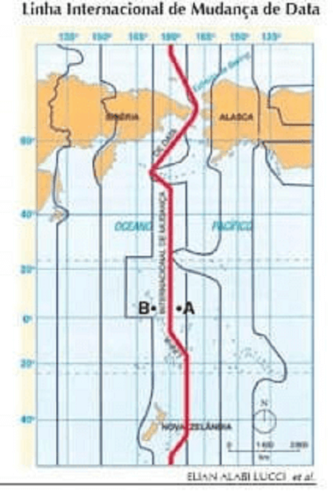

Conteúdo: Fusos horários; Mudança internacional de data.
Objetivo: Entender e aplicar o sistema de fusos horários
Questão 01
(Unicamp 2020)
As coordenadas geográficas são um sistema de linhas imaginárias traçadas sobre o globo terrestre ou um mapa. Através da interseção de um meridiano com um paralelo, podemos localizar cada ponto da superfície da Terra. Como a Terra apresenta uma superfície quase esférica, é possível determinar dois pontos diametralmente opostos, denominados antípodas. Apenas algumas cidades brasileiras têm uma cidade antípoda, como Coari (AM) e Pontes e Lacerda (MT).
Assinale a alternativa que indica duas cidades antípodas
a) Pontes e Lacerda (Brasil) – 15º latitude S e 60º longitude W; Candelária (Filipinas) – 15º latitude N e 60º longitude E.
b) Coari (Brasil) – 4º latitude S e 63° longitude W; Temon (Malásia) – 4º latitude N e 63º longitude.
c) Coari (Brasil) – 4º latitude S e 63° longitude W; Temon (Malásia) – 4º latitude N e 117º longitude E.
d) Pontes e Lacerda (Brasil) – 15º latitude S e 60º longitude W; Candelária (Filipinas) – 75º latitude N e 120º longitude E.
Comentário:
Podemos dizer que duas cidades são antípodas quando estão latitudinal e longitudinalmente distantes 180° entre si. Levando em conta tal afirmação:
Vejamos a imagem de duas regiões antípodas latitudinalmente:

Adaptado de: https://br.pinterest.com/pin

http://www.rc.unesp.br/igce/plnejamento/
Por isso sempre teremos como Antipoda de uma longitude Y°Oeste = 180°- Longitude W°leste.
a) incorreta. É fato que 15°S é antípoda dos 15°N, pois estão distantes 180° entre si, porém é falso dizer que 60°O e 60°L são antípodas, pois estão distantes apenas 120° entre si.
b) incorreta. É fato que 4°S é antípoda dos 4°N, pois estão distantes 180° entre si, porém é falso dizer que 63°O e 63°L são antípodas, pois estão distantes apenas 126° entre si.
c) correta. É fato que 4°S é antípoda dos 4°N. pois estão distantes 180° entre si, e igualmente é verdadeiro afirmar que 63°O e 117°L são antípodas, pois estão distantes 180° entre si, conforme vemos nos desenhos acima.
d) incorreta. É falso dizer que 15°S é antípoda dos 75°N, pois não estão distantes 180° entre si, mas é verdadeiro afirmar que 60°O e 120°L são antípodas, pois estão distantes 180° entre si, conforme vemos nos desenhos acima.
Questão 02
(Unicamp 2019) Dois amigos planejaram assistir à abertura da Copa do Mundo em Moscou. Eles partiram no dia 10 de junho de 2018 do Aeroporto Presidente Juscelino Kubitschek (Brasília), situado a 45o de longitude Oeste, às 16 horas, com destino ao Aeroporto de Heathrow (Londres), situado a 0° de longitude. O voo teve duração de 10 horas.
Os dois amigos esperaram por três horas para partirem em direção ao Aeroporto Internacional (Moscou), situado a 60o de longitude Leste, e o segundo voo durou quatro horas.
Com base nessas informações e considerando que o continente europeu adota, neste período do ano, o horário de verão, que adianta os relógios em uma hora, indique o dia e a hora em que os dois amigos chegaram ao Aeroporto Internacional em Moscou.
Alternativas
a)11 de junho, às 13 horas.
b) 11 de junho, às 16 horas.
c) 11 de junho, às 17 horas.
d 10 de junho, às 16 horas.
A alternativa C está correta – considerando-se as informações do enunciado sobre o dia de partida da viagem, as conversões de diferenças de fusos horários entre Brasília (45% de longitude oeste) e Moscou (45% de longitude leste), o tempo de voo até Londres (0% de longitude) e depois até Moscou, e a escala no aeroporto de Londres e o horário de verão na Europa, o candidato encontraria a resposta 11 de junho, às 17 horas.
A alternativa A está incorreta – pelas informações do enunciado não seria possível o desembarque em Moscou às 13 horas do dia seguinte à partida de Brasília.
A alternativa B também não poderia ser a resposta porque as informações do texto não permitem indicar “às 16 horas”, sobretudo tendo em vista a informação sobre o horário de verão da Europa.
A alternativa D está errada porque o avião se deslocou no sentido oeste-leste, movimento que indica o acréscimo de dias e de horas. Nesse sentido, o dia de desembarque em Moscou não poderia ser dia 10 e, sim, 11 de junho.
Questão 03
(ENEM 2014) Um executivo sempre viaja entre as cidades A e B, que estão localizadas em fusos horários distintos. O tempo de duração da viagem de avião entre as duas cidades é de 6 horas. Ele sempre pega um voo que sai de A às 15h e chega à cidade B às 18h (respectivos horários locais).
Certo dia, ao chegar à cidade B, soube que precisava estar de volta à cidade A, no máximo, até as 13h do dia seguinte (horário local de A).
Para que o executivo chegue à cidade A no horário correto e admitindo que não haja atrasos, ele deve pegar um voo saindo da cidade B, em horário local de B, no máximo à(s)
a) 16h
b) ) 10h
c) ) 7h
d) 4h
d) 1h
Temos que a viagem demorou 6 horas, assim, quando a pessoa decolou às 15 h da cidade A a hora na cidade B era de 18 – 6 = 12 h. Assim, podemos perceber que, entre as cidades A e B, há diferença de fuso horário de 3 horas. Assim, quando forem 13 h em A, serão 10 h em B, assim, para chegar na cidade A nesse horário, ele teria que decolar as 4 h da cidade B, já que a viagem leva 6 h.
Questão 04
(PUC-RS 2007) Três jovens amigos estão localizados em pontos diferentes da Terra: Paulo está a 165° Leste de Greenwich; Pedro permanece a 45° a Oeste de Paulo, e Clara está a 2° Oeste de Greenwich. (Lembre-se que cada fuso horário tem 15°).
Sabendo que no Meridiano Inicial são 18 horas do dia 5 de janeiro, a hora legal e o dia em que Paulo, Pedro e Clara estão são, respectivamente:
a) Paulo: 4h – dia 6; Pedro 2h – dia 6; Clara 16h – dia 5;
b) Paulo 5h – dia 6; Pedro 3h – dia 6; Clara 5h – dia 5;
c) Paulo 17h – dia 5; Pedro 15h – dia 5; Clara 18h – dia 6;
d) ) Paulo 7h – dia 6; Pedro 9h – dia 5; Clara 18h – dia 6
e) Paulo 5h – dia 6; Pedro 2h – dia 6; Clara 18h – dia 5;
Neste caso, serão necessários alguns cálculos matemáticos.
Sabemos que a cada 15º ocorre uma mudança de fuso. Neste caso, devemos dividir os graus em que cada jovem está localizado por 15.
Paulo, por exemplo, está na longitude 165º. 165/15 = 11. Como ele está a leste de Greenwich, seu fuso será UTC+11.
Pedro está a 45º a oeste de Paulo. Atenção, Pedro não está a 45º a oeste de Greenwich, mas sim a 45º a oeste da longitude 165º de Paulo. Assim, devemos tirar 45º dos 165º. Restam 120º. Pedro está a 120º a leste.
Fazendo a operação, 120/15=8. Assim, Pedro está no fuso UTC +8.
Por fim, Clara está a 2º a oeste do Meridiano de Greenwich. Vejamos, se a cada 15º temos a mudança de fuso e o Meridiano de Greenwich localiza-se no centro do UTC 0, nota-se que Clara está no justamente no fuso horário de Greenwich: 0.
Logo:
Paulo: UTC +11; Pedro: UTC +8; Clara: UTC 0.
Se no Meridiano Inicial são 18 horas de dia 5 de janeiro, basta fazermos as somas:
Paulo: 18h + 11h = 5h do dia seguinte (6 de janeiro)
Pedro: 18h + 8h = 2h do dia seguinte (6 de janeiro)
Clara: 18h do mesmo dia (5 de janeiro)
Alternativa E.
Questão 05
(Mackenzie 2004
Localizadas a Oeste de Greenwich, duas cidades, A e B, encontram-se, respectivamente, a 105° e 45°. Numa quarta-feira, um avião saiu de A às 14h30min e chegou a B depois de 5 horas de viagem. O horário de chegada em B foi
a) 18h30min da quarta-feira.
b) 19h30min da quarta-feira.
c) ) 23h30min da quarta-feira.
d) 0h30min da quinta-feira.
e) 2h30min da quinta-feira.
Devemos considerar que em questões que compreendem fusos horários é que a cada 15 horários geográficos se passa 1 hora. E essa hora é somada ou subtraída de acordo com a direção. A cidade A está a 105°, a cidade B está a 45° e ambas possuem uma diferença de 60°.
Sendo assim: 60/15 = 4h
As cidades estão a 4 horas uma da outra.
Dessa forma, se na cidade A eram 14:30h, na cidade B eram 18:30h. Somando o tempo de viagem: 18:30h + 5h, o horário de chegada em B é de 23h30min.
Questão 06
(FUVEST 2002)

A Terra gira sobre ela mesma de Oeste para Leste. Assim, teoricamente, todos os pontos, no mesmo fuso horário, têm a mesma hora. Com base nessas informações e no mapa, podemos afirmar que:
a) há três horários diferentes, aumentando para leste; sendo o primeiro fuso horário até 5°E, o segundo de 5° a 30°E e o terceiro depois de 30°E.
b) as horas serão exatamente as mesmas em todas essas cidades, porque elas se situam na linha imaginária de 50°N.
c) as horas se apresentam com acréscimo, de Berlim para Astana, devido ao sentido de rotação da Terra e à incidência dos raios solares.
d) as horas se apresentam em decréscimo, de Londres para Kiev, devido ao sentido de rotação da Terra e à incidência dos raios solares
e) há dois horários diferentes, diminuindo para leste; sendo o primeiro até Kiev e o segundo até Novosibirsk.
O critério usado para estabelecer o espaço equivalente a um fuso horário foi dividir a circunferência da Terra (360°) por 24 horas, que é o tempo que a Terra leva para percorrê-la. Obtém-se, pela divisão, 15°, um espaço (fuso) pelo qual os horários poderiam ser padronizados. O fuso inicial foi fixado pelos ingleses no século XIX, a partir de Greenwich, meridiano que passa pelo bairro de mesmo nome em Londres, Inglaterra. O fuso é estabelecido a partir de Greenwich (0°), com 7°30’ para leste e para oeste.
Na questão, observa-se que, a partir de Londres, temos todas as cidades distribuídas a leste, para as quais as horas se adicionam, pois, nos dirigimos ao local de onde o Sol aparentemente vem. Assim, de Londres, ou de Berlim, para leste, os horários estarão adiantados. Na verdade, de Londres a Novosibirsk, ultrapassam-se os 75°, o que incluiria 5 fusos.
Questão 07
(UFCE-1999)
sobre o sistema de fusos horários, é verdadeiro afirmar que eles são 24, cada um deles:
a) equivalendo a 15° de longitude
b) equivalendo a 10° de longitude
c) correspondendo a 10° de latitude
d) correspondendo a 15° de latitude
e) estabelecido segundo a linha do Equador
Questão 08
(UERJ 1999) ao longo do meridiano 180º, no Oceano Pacífico, encontra-se a Linha Internacional de Mudança de Data. Quando for meio-dia em Greenwich, será meia-noite na Linha Internacional de Mudança de Data e lá um novo dia estará se iniciando.

Considere que na localidade B, assinalada no mapa, sejam 11 horas de domingo, do dia 22 de junho de 2019.
Nessas condições, na localidade A, também assinalada no mapa, o horário, o dia da semana e o dia do mês de junho do mesmo ano serão, respectivamente:
a)10 – sábado - 21
b) 11 – sábado - 21
c) 13 – sábado - 21
d) 11 – domingo - 22
e)12 – domingo – 22
Quando cruzamos na direção Leste-Oeste temos um dia atrasado. Exemplo. Dia 02 de fevereiro para dia 01 de fevereiro. Entretanto, quando cruzamos na direção Oeste-Leste, temos um dia adiantado, avançamos para o dia seguinte.
Questão 09
(UFJF 1998) se viajarmos em direção ao Ocidente, estamos correndo contra o tempo. Saímos tarde e chegamos mais cedo. Por isso, adotou-se a Linha Internacional de Mudança de Data. Se ela é cruzada de Oeste para leste, o momento após o cruzamento é o dia seguinte.
Marque a alternativa que apresenta onde se situa a Linha Internacional de Mudança de Data:
a) a 90° de Longitude Oeste;
b) a 180° de Longitude;
c) a 90° de Longitude Leste
d) a 360° de Longitude
e) no Meridiano de Greenwich
O antemeridiano de Greenwich é a Linha Internacional de Mudança de Data localizada no meridiano 180º, no Oceano Pacífico.
Questão 10
(UFJF 1998)Um time de futebol do estado de São Paulo (localizado no fuso 45° O) irá realizar uma partida em Boa Vista (60° O), capital de Roraima. A equipe irá embarcar às 14h e a viagem terá duração de 6 horas. Considerando o horário de Roraima, a que horas os jogadores de São Paulo desembarcarão em seu destino final:
a) 19h
b) 17h
c) 21h
d) 20h
e) 18h
São Paulo: 45° O.
Roraima: 60° O.
Tempo de viagem: 6 horas.
Hora do embarque: 14:00h
Resolução: Como Roraima apresenta 1 hora a menos que São Paulo, então 13:00 somando o tempo do deslocamento (6 + 13:00h =19 horas) o time paulista desembarcou às 19:00 em Roraima.